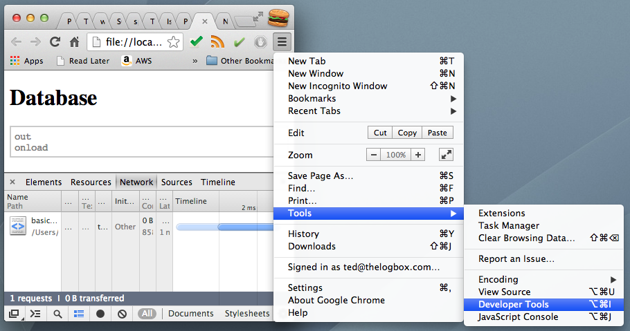
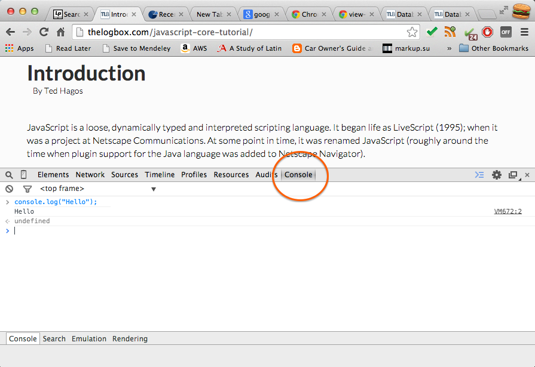

Introduction
1 What is it
JavaScript is a loose, dynamically typed and interpreted scripting language. It began life as LiveScript (1995); when it was a project at Netscape Communications. At some point in time, it was renamed JavaScript (roughly around the time when plugin support for the Java language was added to Netscape Navigator).
Java and JavaScript are not related to each other, not even remotely, they simply share a commonality in their names.
JavaScript’s popularity maybe attributed to it’s ubiquity amongst web pages (client side JavaScript), but it is actually being used in lots of places other than web pages. JS can be ran on the server (Node.JS), it can be used to do MVC type development of web apps (Backbone.JS) and it can also be used to stitch together a bunch of Java apps together (Rhino); these are just some of the other uses of JavaScript.
JavaScript as we know it today, is the scripting language consistent with ECMAScript. ECMAScript is a standardized scripting language according to ECMA specification 262 and ISO/IEC 16262. ECMAScript exist in the form of JavaScript, ActionScript and JScript. If you are looking for language specification of JavaScript, you can look at the ECMAScript 262^1^.
2 A bit of history
2.1 Origins
2.2 About the name
3 Minimum tooling
It is not difficult to get started with JavaScript. The necessary tools you need to try out and play around with the language are most likely already in your notebook or desktop computer. You only need a modern web browser and not much else.
Most modern browsers like Chrome, Firefox, Safari and IE include the JavaScript runtime, some diagnostic tools and even an interactive JavaScript environment. You can use the interactive environment to try out expressions and statements. It’s a programmer’s playground.
You can use your preferred browser to try out the exercises, but if you want to follow the coding examples closely, please use the latest Google Chrome browser. That’s what I’ll be using for the examples.
3.1 The JavaScript console
The Chrome browser includes a set of developer tools. These tools are used for authoring web pages and debugging. This is what we will use to take our first steps towards JavaScript programming.
Launch a Chrome browser session if you haven’t done so already. You are probably looking at your home page or a default page of Chrome. There are two ways to get to the developer tools. You can select the Chrome menu (the symbol that has three horizontal lines at the top-right of the browser), then select Tools > Developer Tools.

Anoter way to launch the dev tools is to right click on any part of the web page. Then from the context menu choose the options Inspect Elements.

The developer tools is organized into tabs. The tab you need to get to is the Console. Click that tab to access the interactive JavaScript environment.
The Console is a REPL environment. REPL means Read, Eval, Print, Loop. You can type valid JavaScript expressions, statements and even function definitions in the Console and it will Read what you typed, then Evaluate it. After that it will Print the result of the evaluation and then it will wait for you to type something up again. Lather, rinse, repeat.
The Console is a good place to start when you are beginning to learn JavaScript. It is a valuable tool not only for learning for debugging. Some seasoned programmers continue to use the console for quick investigations and debugging sessions. These are good reasons why you might want to invest some time learning this tool.
Click anywhere inside the Console area. When you see a blinking vertical cursor right next to chevron symbol (a greater than sign), the Console is ready to take input. Type some simple arithmetic expressions to try it out, then press enter. Each time you press the enter key, it tells the Console that you want to evaluate something. Try out some of these expressions.
> 1 + 1;
> alert("Hello JavaScript");
> prompt("What is your name");
> var x = 100;
> console.log(x);
> var myname = prompt("What is your name");
> console.log(myname);Did you notice that each line was punctuated with a semi-colon? That’s part of the language. JavaScript statements should finish with a semi-colon just like English sentences are punctuated with a period.
Be careful when typing the commands above. Take care that you type them as you see them above. JavaScript is case sensitive. Alert is not the same things as alert. If you mistype the commands, you will see some errors.
4 Scripting example
A full hello world example. The goal is not to print Hello World, but to have a feel of the environment and get into some workflow
5 More on tooling
Footnotes:
^1^
The ECMA 2262 specification can be found at http://www.ecma-international.org/publications/standards/Ecma-262.htm